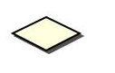
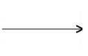

UML - Stavový diagram (State Machine Diagram)
Elementy a spojenia v UML .FRI:
- Stav modeluje situáciu, počas ktorej pretrváva nezmenený stav objektu. Táto nemennosť môže nastať vtedy, keď objekt čaká na výskyt nejakej udalosti. Avšak stav môže modelovať i dynamické vlastnosti ako vykonávanie nejakého procesu, t.j. element modelu vstupuje do stavu, keď proces začína a opúšťa ho, keď proces končí. Stav môže mať viacero podôb: jednoduchy stav (takýto stav nemá "podstavy") a kompozitný stav (takýto stav obsahuje jeden alebo viacero podstavov, vstup a výstup sa znázorňuje počiatočným a konečným stavom a kompozitný stav sa modeluje tak, že element obsahuje elementy "podstavov"). Stav sa modeluje ako obdĺžnik s oblými rohmi rozdelený vodorovnou čiarou na dve časti a meno stavu je v hornej časti tela obdĺžnika.
- Začiatočný a konečný stav sú špeciálne stavy. Začiatočný stav môže byť iba jeden, konečných stavov môže byť viacero. Začiatočný stav reprezentuje stav objeku na začiatku jeho existencie a konečný stav na konci existencie objektu. Začiatočný stav sa modeluje ako čierny kruh, konečný stav ako čierny kruh v bielom kruhu.
- Rozhodnutie umožňuje rozdelenie prechodu na viacero možných prechodov podľa vyhodnotenia podmineky. Ak ani jedna podmienka nebude vyhodnotená ako pravdivá, tak vtedy sa hovorí o chybe návrhu. Preto sa odporúča označik jeden prechod podmienkou "inak, angl. else" pre prípad, že ani jedna z uvažovaných podmienok nebola vyhodnotená ako pravdivá. Rozhodnutie sa modeluje ako kosoštvorec.
- Spojenie môže byť vodorovné alebo zvyslé. Slúži na spojenie viacerých prechodov do jedného (vstupujúce prechody nesmú mať podmienku a ani efekt) alebo na rozdelenie jedného prechodu na viacero prechodov (vystupujúce prechody nesmú mať podmienku a efekt). Modeluje sa ako vodorovná alebo zvyslá hrubá čiara.
- Prechod je orientovaný vzťah medzi zdrojom a cieľom pričom zobrazuje prechod medzi dvoma stavmi v stavovom diagrame a reprezentuje kompletnú odozvu stavového diagramu na výskyt udalosti patričného typu. Prechod môže obsahovať Udalosť (dôvod prechodu, môže to byť signál, udalosť, zmena v nejakej podmienke a pod.), Podmienku (podmienka, ktorá musí byť splnená, aby prechod medzi stavmi nastal) a Efekt (akcia, ktorá sa vykoná ako dôsledok prechodu z jedného stavu do druhého). Syntax pre Prechod je: Udalosť[Podmienka]/Efekt. Prechod sa modeluje ako orientovaná čiara a môže obsahovať popis prechodu.
- Poznámka slúži na bližšie popísanie jednotlivých elementov diagramu a je možné ju pripojiť iba k entitám, nie k vzťahom medzi entitami.
- Čiara k poznámke znázorňuje, ktorú entitu poznámka bližšie popisuje.





Ukážka stavového diagramu mobilného telefónu:

Pre viac informácii odporúčam navštíviť iné zdroje, napríklad State Machine Diagram wiki